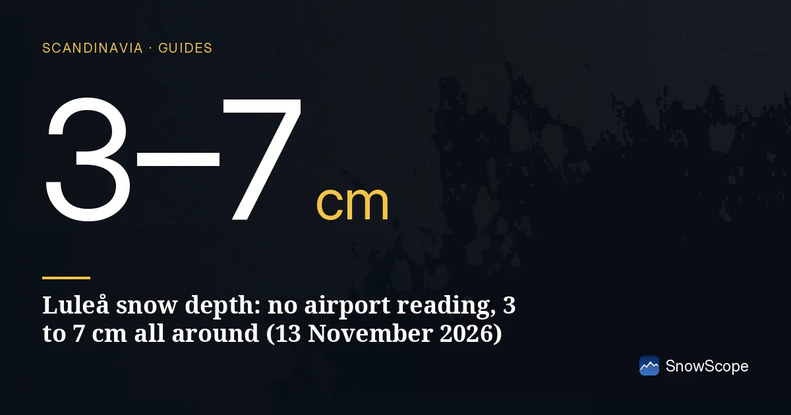

Luleå snow depth: no airport reading, 3 to 7 cm all around (13 November 2026)
Luleå itself stayed silent on Friday, but the weather stations ringing the city all reported their first snow cover of the season. From the coast to the inland hills, every measurement station around Luleå recorded between 3 and 7 cm, suggesting the city too has picked up a thin white layer under the morning's cloudy sky.
See the live snow forecast for Luleå in the SnowScope appSnow depth, powder alerts and the 3D map, free.
What the stations saw
Klöverträsk, 35 km west, rose to 5 cm. Brännberg, further inland at 93 m elevation, also 5 cm. Down the coast at Piteå, the depth was lighter at 3 cm, while Kalix to the north recorded 4 cm. Klockarträsk, the highest of the group at 148 m, reached 7 cm—the deepest reading of the morning. Veniksel, northeast at 75 m, measured 3 cm.
Every one of these stations had bare ground on Thursday. By Friday morning, after overnight snow and a light morning phase, they all held a fresh cover. The uniformity across this ring—none deeper than 7 cm, none shallower than 3 cm—points to a single, steady snow event that blanketed the whole region from sea level to the low hills.

How this compares with past Novembers
SnowScope holds 46 past winters of snow records for this area. On 13 November, snow lay on the ground in 31 of those winters. The typical depth for this date is 2 cm, though one winter in four saw 6 cm or more. The highest reading ever recorded was 34 cm. So the 3 to 7 cm measured this week sits squarely in the normal-to-good band for mid-November.
Looking back at the last five seasons: 2021-22 had 1 cm, 2022-23 had none at all, 2023-24 had 9 cm, 2024-25 had bare ground, and last year (2025-26) had 3 cm. This Friday's reading slots neatly into that pattern—neither a banner year nor a disappointment, just what many Novembers bring to Norrbotten.
What comes next this season
The first snow tells us little about what lies ahead, but history does. By 1 December, the typical depth here reaches 7 cm. By mid-December, it climbs to about 11 cm. By mid-January, it settles near 27 cm. So what arrives now is the opening chapter; the main story builds slowly through December and into the new year.
A sturdy base does not yet exist. Early-season snow often sits loose on bare ground or moss, and wind or rain can scatter it or bind it into ice crust. This Friday brings perhaps 3 cm more, still at temperatures just below zero. Saturday stays colder—around -8 °C at its lowest—with only light powder falling. Sunday adds 1 to 2 cm as the air warms toward 3 °C by afternoon.
Friday to Monday: the first week of snow
Friday is steady snow at a few degrees below zero, adding to what fell overnight. Saturday becomes sharper—clear or partly cloudy, with the cold sinking in. It is the kind of crisp morning when the snow squeaks underfoot and the air stings your face. Sunday shifts: more snow in the morning, still light, then clouds break and warmth climbs toward freezing.
Monday is the turning point. Rain replaces snow. Between 5 and 8 mm of liquid will fall while the temperature hovers around 1 or 2 °C. That is enough to soak into the new cover, bond it, and then freeze it on Tuesday morning as the wind turns northerly again and the thermometer drops.
What this means for the shore and the inland paths
Saturday, with its dry cold and bright sun, invites the first walk on the snowy ground around the city. The coastal paths will be crunchy and pleasant, the light flat and clear. Sunday works too if you do not mind the occasional light flurry.
Monday's rain is a reality check. Any ice on paths, steps, or the apron round the door will be treacherous on Tuesday morning. Salt and grit should go down before the freeze arrives. The bay and the river are not frozen: white shore or icy appearance does not mean safe passage. Stay on land.
Tips for skiers
- Saturday is the best day this week for the first winter walk: dry, cold, and the new snow will still be powdery underfoot.
- Monday's rain will freeze hard by Tuesday morning; treat all outdoor surfaces as icy until the sun gains heat.
- Early-season snow bonds poorly to bare ground; paths may become slippery faster than you expect once rain and freeze cycle begins.
- The bay ice is not safe to trust: a white shoreline does not mean the water below is frozen solid. Stay on the paths and roads.
- Stock rock salt or grit now; Tuesday morning will demand it on every doorstep and slope.
About these numbers
Resort snow depths are the deepest snow on the resort's upper slopes on the date shown; they are estimates for an area, not a measurement at one point. Forecasts can change. Always read the official avalanche bulletin before going off-piste.
Cite this report
For research, teaching or the press: the numbers and charts are free to reuse under CC BY 4.0 with this citation.
SnowScope (2026), Luleå snow depth: no airport reading, 3 to 7 cm all around (13 November 2026), https://snowscope.app/blog/en/2026/11/lulea-snow-depth-13-november-2026.html, accessed 2026-11-13
SnowScope (Atlas Labs). (2026, November 13). Luleå snow depth: no airport reading, 3 to 7 cm all around (13 November 2026). SnowScope snow reports. https://snowscope.app/blog/en/2026/11/lulea-snow-depth-13-november-2026.html
BibTeX
@misc{snowscope2026luleasnowdepth13november,
author = {{SnowScope (Atlas Labs)}},
title = {Luleå snow depth: no airport reading, 3 to 7 cm all around (13 November 2026)},
year = {2026},
month = nov,
howpublished = {\url{https://snowscope.app/blog/en/2026/11/lulea-snow-depth-13-november-2026.html}},
note = {Published 2026-11-14 13:29 UTC; accessed 2026-11-13}
}· CC BY 4.0 · Methods, data and tools →
Follow Luleå
Free: a message when fresh snow is coming, and the forecast every morning.
More snow reports

Himos opens a prepared cross-country loop on 14 November as natural snow remains absent from the forest floor around this Finnish resort.

On 15 December, Hemsedal shows 32 cm at base, 70 cm at mid-mountain and 106 cm at top. Height is everything here.

Hemavan's mid-mountain has 82 cm of snow on a typical 15 December. Every winter in 46 years had 30 cm or more in mid-December. Data from 13 November 2026.